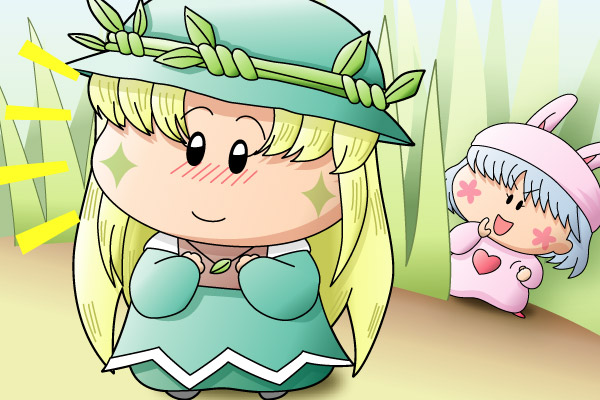

アロマ「この手紙、受け取ってくれるかしら…」
パピィ「アロマちゃん、大丈夫よ！がんばって！！」
９５話（「大物妖精Ｍ ､電撃婚約！？」）で、ムルモの婚約者として登場したアロマちゃんです。お話はハッピーエンド(?)で終わったのですが、その後のエピソードを想像してこんな絵を描いてみました。気になる彼に告白するアロマと、お節介にも(^^;アロマを応援するパピィという構図です。
ミルモでポン！１時間スペシャルの記念に描いてみたのですが、アロマちゃんはかわいいですね。ミルモが惚れる理由も分かります(笑)。個人的に再登場をかなり希望なキャラですね♪（キャラ設定もしっかり考えられているようですし）。あ、帽子や髪の毛など、線が多くて描くのが大変というキャラでもあるのですが(汗)。
さてさて、アロマちゃんの”幼なじみの気になる彼”っていったい誰なんでしょうねぇ。もしかしてやだったりして。おそらく今まで登場したことのない新キャラになるのだと思いますが、ほんの少しでも期待してみたりしました(^◇^;)。
(2004/3/7)